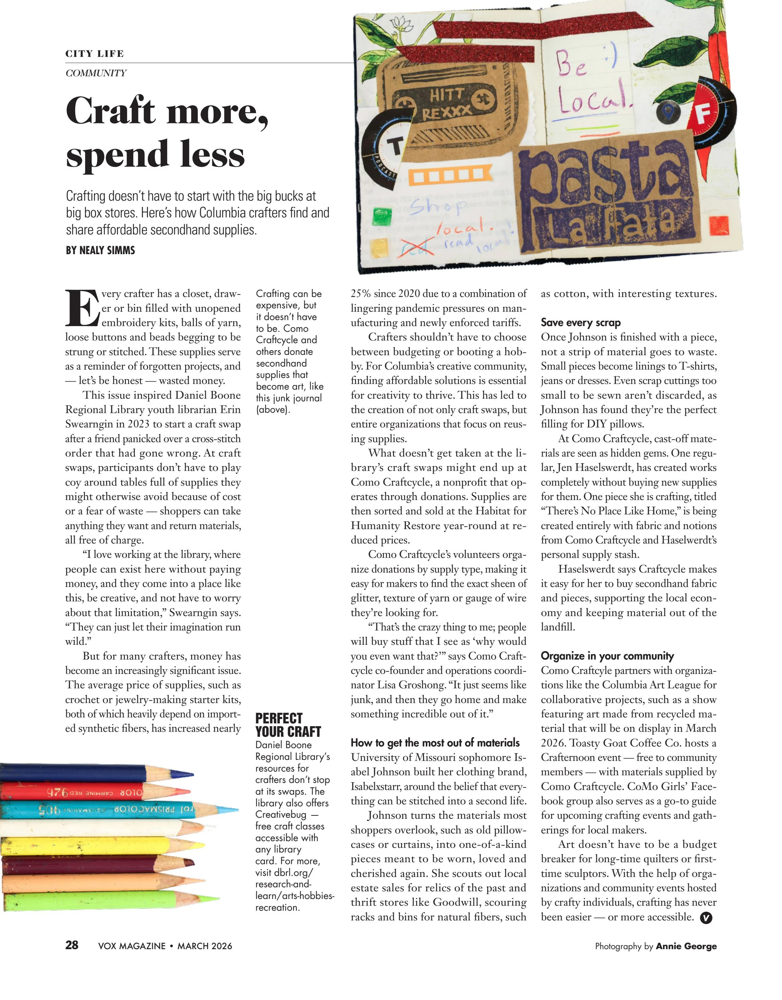

I began designing for Vox Magazine as a design assistant the start of the fall 2025 semester. Although I did contribute to help design a few department spreads, it was minimal changes that I made. The designs below are included of my position of assistant art director and currently art director, for spreads that I fully layout/design in some way, whether that was feature desginig, formatting, placing teasers, or photos.

This is from the Vox Magazine March 2026 edition. I helped format this spread and implement in the extra design elements, such as the colored pencil icons.